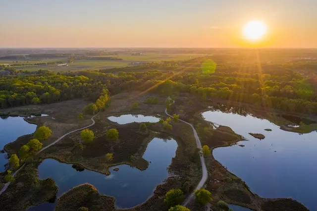

3x een leuke Bed and Breakfast in Wijchen
Gepubliceerd op 20 december 2022, bijgewerkt op 21 oktober 2023
Onderdeel van de gids Overnachten in Nijmegen

De meest opvallende oude bezienswaardigheid in Wijchen is het centraal gelegen Kasteel van Wijchen, dat voor het eerst genoemd wordt in archiefstukken uit begin 1392. De Berendonck is een nabijgelegen recreatiemeer dat bezoekers duik- en waterskimogelijkheden biedt. Het ligt naast een uitgestrekt bosgebied, met een mountainbikeroute van 8 kilometer (een van de vele MBT-routes rondom Wijchen). Het park De Groene Heuvels, met open water om te duiken en vakantiewoningen ter plaatse, ligt vlakbij in Ewijk. Men kan ook golfen of skiën in Wijchen, dat vlak bij het centrum een zwembad heeft dat de Meerval heet. Het kasteel van Wijchen herbergt een archeologisch museum waar ook een vierwielige pronkkar uit ongeveer 750 voor Christus staat. Verder zijn er verschillende fiets- en wandelroutes en ook De Blije Dries – een grote speeltuin met onder meer een buitenzwembad, golfbaan en kartbaan. Dit zijn enkele van de beste B&B’s in Wijchen voor een comfortabel verblijf:

Bed en Breakfast Balgoy de Holtsehoek 1&2
Op zoek naar iets aparts, rust en een leuke Bed en Breakfast?
HET VOORHUIS: Je krijgt de beschikking over het gehele voorhuis! Badkamer met luxe bad en douche. Keuken met koekkast. Slapen kun je in een ruime bedstede, opkamer of de fijne bedbank. Totaal 6 slaap plaatsen. Wil je een extra bed dan zijn de extra kosten 10 euro.
De Hooiberg: Een gezellige hooiberg met een open ruimte, een heerlijk bed, en eventueel een extra slaapbank. De badkamer heeft een douche, koelkast, Senseo en waterkoker. Ook is er een mooie gashaard. In totaal zijn er 4 slaapplaatsen beschikbaar. Kom je met 2 personen, maar wil je een extra bed dan is de meerprijs 10 euro.
De locatie is dicht bij Wijchen, Grave, Nijmegen en naast de A50. Er zijn veel restaurants zoals Jumbo of snackbars in de buurt binnen 1,5 km. De eigenaar doet zijn best voor je om een geweldige tijd te hebben met tips over wandelen, fietsen of goede eetgelegenheden in de omgeving.
Pura Vida
De B&B ligt in het landelijke dorpje Nederasselt, dat op de grens van Gelderland en Noord-Brabant ligt. Er zijn verschillende pittoreske stadjes en dorpen in de buurt die een bezoek waard zijn, zoals Grave en Ravenstein. Er zijn ook veel mooie wandel- en fietsroutes in de omgeving, evenals natuurgebieden als Overasseltse Vennen en Kraayenbergse plassen. Sauna Thermen Berendonck ligt op korte afstand, of je kunt gaan winkelen in het centrum van Nijmegen.
Het gastenverblijf dat ze aanbieden heeft een eigen ingang, woonkamer en keuken. Boven, onder het rieten dak is de slaapkamer en een eigen badkamer met wastafel, toilet en regendouche.
Het ontbijt is bij de kamerprijs inbegrepen, maar we kunnen het uit je boeking halen voor €15 korting. Laat het weten of je allergieën of specifieke wensen hebt!
B&B Bouwlust Winssen
Deze B&B Bouwlust Winssen biedt luxe, rust en ruimte. Het huis is een rijksmonument uit 1849, uitstekend geschikt voor een uitje. In de ochtenduren wacht een uitgebreid ontbijt op je geserveerd. Als het weer het toelaat, kan het ontbijt ook op het terras genuttigd worden, met inachtneming van de sociale afstandelijkheid. Wij komen tegemoet aan alle dieetbeperkingen, dus laat het van tevoren weten als dat nodig is.
De bezoekers hebben toegang tot de hele tuin (1 hectare) met verschillende zitjes. Ze kunnen ook gebruik maken van het zwembad dat gedeeld wordt met de bewoners (5×10 meter; in de zomer wordt het verwarmd door zonne-energie). Als ze willen, kunnen ze gebruik maken van een houtgestookte buitensauna. Tegen een extra vergoeding kunnen gasten de hot tub service aanvragen.
De kamer is compleet met een boxspring (180×210), eigen badkamer, badjassen, slippers, zithoek, tv, nespresso en waterkoker. Je vindt ook boeken, tijdschriften en spelletjes in de ontbijtruimte. Nespresso cups, thee en een volledig gevulde koelkast zijn inbegrepen voor je gemak.
Conclusie
Als je op zoek bent naar een persoonlijke en huiselijke ervaring tijdens je verblijf nabij Nijmegen te overnachten, dan is een bed and breakfast in Wijchen een uitstekende keuze. Deze schilderachtige gemeente biedt een rustige setting en is een ideale uitvalsbasis voor het verkennen van zowel de stad Nijmegen als de omliggende natuurgebieden
nog meer b&b inspiratieOok leuk om te lezen
NijmegenOnline.nl
NijmegenOnline.nl is de plek voor alle informatie over Nijmegen en haar prachtige omgeving. Of je nu hier komt studeren, een inwoner bent of lekker dagje op pad gaat, wij voorzien je van alle informatie